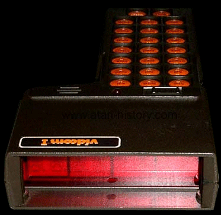
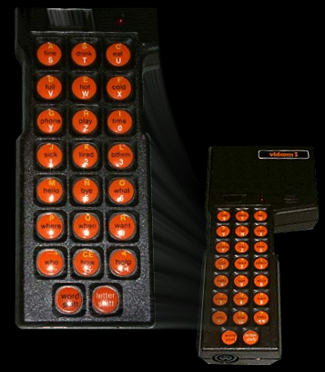

|  |
The Vidcom I (Video Communications Device) from Atari Healthcare Systems.... huh? That's exactly what I said when the Atari Historical Society received this obscure, and totally non-entertainment related device. After careful examination of the unit, sure enough it had Atari, the "fuji" symbol and of course the usually Warner Communications Company info and symbol. This device runs on 6vdc @ 1.2ma of power and has a set of rechargeable ni-cad batteries inside of it. On the bottom of the unit is a power jack and a connector port for a telephone connection for communicating just like a hearing impaired teletype terminal. Basically the unit has 23 keys on it with a shift key and audio key for beeps from a built-in speaker. Each key a letter of the alphabet, a number from 0-9 and a word. The words are "fine", "drink", "eat", "full", "hot", "cold", "phone", "play", "time", "sick", "tired", "bthrm", "hello", "bye", "what", "where", "when", "want", "who", "how", "help".
Based on these words and the basic functionality of the device.
It was summarized that most likely what the unit was designed to do was allow
hospitalized individuals who were unable to speak due to injuries and such
to communicate, for someone who was deaf and/or mute and did not know American
Sign-Language to communicate and also for telephone communications for
the hearing/speech impaired.
|
|
After speaking with several engineers from Atari's earlier Warner days, Owen Rubins, Allan Alcorn and Steve Bristow all replied back and explained "We did some work on devices for the hearing impaired for health care/medical, however we got out of that line of business very quickly". In fact perhaps so quickly, no one till now ever knew outside of Atari that such a device ever was designed or sold. The unit has a set of extra large LED displays on the front of it to display words and simple sentences. The built in speaker could sound a beep to get someone's attention so that a message could be shown to them. This is certainly an odd and very unique item and hopefully more items such as this will be unearthed so that the Atari Historical Society can help uncover their mysteries and present them to the world so that yet another piece in the puzzle of mysteries called Atari can be put into place. |
 |